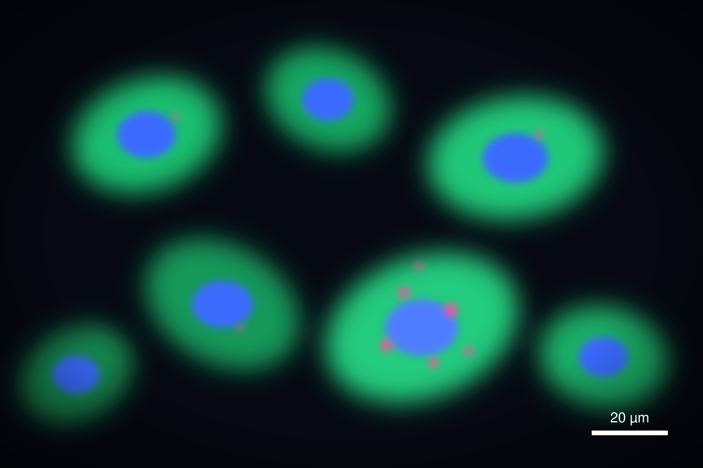

Layout
写真と言葉を半分ずつ
data-layout="split" は画面を二分し、メディアを端まで広げます。
.is-flip で左右が入れ替わります。
html-slide 2
直接操作エディタ・マジックムーブ・Claude と回すレビューループ
Your NameLab Seminar2026-10-07
ビルドなし、依存なし。差分は git で読める。
Agenda
章の区切りは色を反転して、聞き手に一呼吸を。
Basics
標準のスライドは header と本文だけ。本文は 32px で、会議室の後ろからでも読める大きさです。
data-step で順番に出せる.callout に入れる。Components
素の HTML にクラスを1つ。テーマの色と書体は自動で付いてくる。
ブラウザ上でドラッグして並べ替え、リサイズ。結果はそのままソースに書き戻る。
気になる所にコメントを置けば、Claude がそこを読んで直す。
Data
| 四半期 | 精度 |
|---|---|
| Q1 | 61 |
| Q2 | 68 |
| Q3 | 74 |
| Q4 | 83 |
Data
| 1月 | 2月 | 3月 | 4月 | 5月 | 6月 | |
|---|---|---|---|---|---|---|
| 提案手法 | 42 | 51 | 58 | 69 | 77 | 86 |
| 従来手法 | 40 | 44 | 47 | 52 | 54 | 57 |
ソースにあるのはただの table。数値を書き換えれば、その場で描き直されます。
色はテーマのトークンから取るので、テーマを替えるとグラフも替わります。
Layout
data-layout="split" は画面を二分し、メディアを端まで広げます。
.is-flip で左右が入れ替わります。
Process
Roadmap
Code
def score(pred, truth, k=10):
"""Top-k accuracy over a batch."""
hits = 0
for p, t in zip(pred, truth):
if t in p[:k]:
hits += 1
return hits / len(truth) # 0.0 – 1.0class="lang-py" を付けるだけで色が付きます。
着色は CSS Highlight API。DOM を書き換えないので、エディタで文字を直しても壊れません。
Table
| 手法 | 精度 | 速度 | メモリ | 備考 |
|---|---|---|---|---|
| ベースライン | 57% | 1.0× | 8 GB | 2024年の標準構成 |
| 蒸留モデル | 64% | 2.1× | 4 GB | 軽いが精度は頭打ち |
| 提案手法 | 86% | 3.4× | 6 GB | 精度と速度を両立 |
2枚のスライドに同じ要素があれば、勝手につながる。
Morph
Morph
スライドを複製して動かすだけ。data-morph で名前を付ければ確実です。
| 提案手法 | 3.4 |
| 蒸留モデル | 2.1 |
| 量子化のみ | 1.6 |
| ベースライン | 1.0 |
Free objects

.free。エディタでドラッグすればガイドに吸着します。フローの外に置きたい物は自由配置に。
Data
| 実験 | 18 |
| 解析 | 12 |
| 執筆 | 6 |
| 会議 | 4 |
| 化合物 | 予測値 | 実測値 |
|---|---|---|
| A | 1.2 | 1.5 |
| B | 2.1 | 1.9 |
| C | 2.8 | 3.3 |
| D | 3.6 | 3.4 |
| E | 4.4 | 4.9 |
| F | 5.1 | 4.8 |
| G | 5.9 | 6.4 |
| H | 6.8 | 6.6 |
Summary
従来比 +29pt。速度も 3.4 倍に。
Node だけで動く
1行で着せ替え
手元の Chrome でそのまま書き出し
完璧とは、付け加えるものがなくなった時ではなく、削るものがなくなった時に達成される。— アントワーヌ・ド・サン＝テグジュペリ
見て、気づいて、置いておく。直すのは任せる。
Review loop
<section class="slide">
<h2>結果</h2>
<!-- @fix: 凡例が図に被っている。右上へ -->
<hs-chart type="line">…</hs-chart>
</section>hs check がはみ出しと未解決コメントを一覧Hero
全面メディアの上に文字を載せるのが hero。
Thank you
質問・コメントをお待ちしています。
you@example.comgithub.com/you